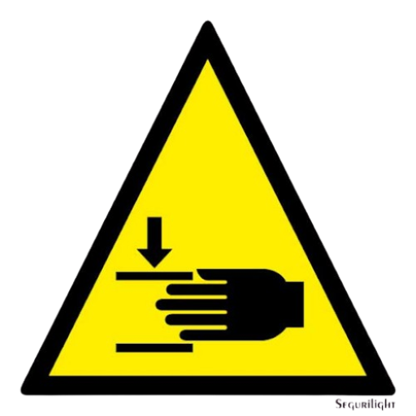
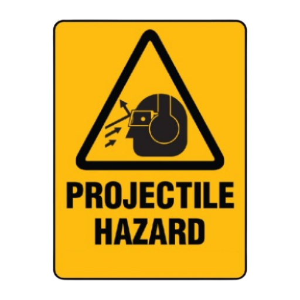

<!DOCTYPE html>
<html lang="en">
    <head>
        <meta charset="UTF-8">
        <meta name="viewport" content="width=device-width, initial-scale=1.0">
        <title>Celda Robotica - Red Forge Toys</title>
        <link rel="stylesheet" href="styles/styles.css">
        <link rel="stylesheet" href="styles/celda.css">
        <script src="https://cdn.jsdelivr.net/npm/chart.js"></script>
        <script src="https://cdn.jsdelivr.net/npm/chartjs-plugin-datalabels"></script>
    </head>
</html>
<body>
    <header>
        
        <h1>Red Forge Toys</h1>
        <p>Innovación y Automatización para un Futuro Divertido</p>
        <nav>
            <ul class="menu">
                <li><a class="menu home" href="index.html" data-title="Home"><span><span>Home</span></span></a></li>
                <li><a class="menu gestion" href="gestion.html" data-title="Gestión de Proyecto"><span><span>Gestión de Proyecto</span></span></a></li>
                <li><a class="menu Produccion" href="gest_produccion.html" data-title="Gestión de Producción y Automatización"><span><span>Gestión de Producción y Automatización</span></span></a></li>
                <li><a class="menu evaluacion" href="economica.html" data-title="Evaluación Económica del Proyecto"><span><span>Evaluación Económica del Proyecto</span></span></a></li>
                <li><a class="menu celda" href="Celda.html" data-title="Celda de Manufactura Robotizada"><span><span>Celda de Manufactura Robotizada</span></span></a></li>
                <li><a class="menu digital" href="digital_factory.html" data-title="Digital Factory"><span><span>Digital Factory</span></span></a></li>
                <li><a class="menu plc" href="plc.html" data-title="Controladores Industriales (PLC)"><span><span>Controladores Industriales (PLC)</span></span></a></li>
                <li><a class="menu scada" href="scada.html" data-title="Sistema de Supervisión SCADA"><span><span>Sistema de Supervisión SCADA</span></span></a></li>            
                <li><a class="menu comentarios" href="comments.html" data-title="Comentarios"><span><span>Comentarios</span></span></a></li>         
            </ul>
        </nav>
    </header>
    <main>
        <section class="seccion1">
            <div class="texto">
                <h1>Celda Robótica</h1>
                <p>
                    Mediante un robot SCARA implementamos una rutina para hacer el empaquetado de los juguetes,
                     a lo largo de esta sección se describe el proceso paso a paso para este proceso, además de explorar
                      algunos de los riesgos asociados a una celda robotizada.
                </p>
            </div>
            <div class="imagen">
                
            </div>
        </section>
        <section class="seccion">
            <div class = "horizontal">
                <div class = "elementos">
                    <h2>Descripción</h2>
                    
                    <p class>La celda robotizada utiliza un robot <b>ABB IRB 920</b> para automatizar el proceso de empaquetado de juguetes terminados, minimizando la intervención humana y garantizando un flujo eficiente de producción.
                         El robot recoge cada juguete de la línea de producción y lo coloca dentro de una caja previamente posicionada. Luego, toma la tapa y la coloca sobre la caja asegurando un cierre correcto.
                         Una vez completado el empaque, se activa la banda transportadora de salida, que envía el producto a la zona de despacho.</p>
                </div>
                <div class = "separador"></div>
                <div class = "elementos">
                    <h2>Paso a Paso de Celda Robotizada</h2>
                    <p>Hacer click en los recuadros para conocer mas detalles.</p>
                    <div class="container">
                        <div class="step"><div class="box" onclick="showModal('Recoger Caja')">Subproceso 1: Recoger Caja</div></div>
                        <div class="line"></div>
                        <div class="step"><div class="box" onclick="showModal('Dejar Caja Sobre La Banda Transportadora')">Subproceso 2: Dejar Caja Sobre La Banda Transportadora</div></div>        
                        <div class="line"></div>
                        <div class="step"><div class="box" onclick="showModal('Recoger Juguete')">Subproceso 3: Recoger Juguete</div></div>
                        <div class="line"></div>
                        <div class="step"><div class="box" onclick="showModal('Dejar Juguete Dentro De La Caja')">Subproceso 4: Dejar Juguete Dentro De La Caja</div></div>
                        <div class="line"></div>
                        <div class="step"><div class="box" onclick="showModal('Recoger Tapa')">Subproceso 5: Recoger Tapa</div></div>
                        <div class="line"></div>
                        <div class="step"><div class="box" onclick="showModal('Colocar La Tapa Sobre La Caja')">Subproceso 6: Colocar La Tapa Sobre La Caja</div></div>
                    </div>
                </div>
                <div>    
                    <div id="modal" class="modal">
                        <div class="modal-content">
                            <span class="close" onclick="closeModal()">&times;</span>
                            <h2 id="modal-title"></h2>
                            <p id="modal-description"></p>
                            
                        </div>
                    </div>
                    
                    <script>
                        function showModal(title) {
                            const details = {
                                "Recoger Caja": { desc: "", img: "Images/PLC/plc5.png" },
                                "Dejar Caja Sobre La Banda Transportadora": { desc: "", img: "Images/PLC/plc6.png" },
                                "Recoger Juguete" : {desc:"",img:"Images/PLC/plc7.png"},
                                "Dejar Juguete Dentro De La Caja": { desc: "", img: "Images/PLC/plc8.png" },
                                "Recoger Tapa": { desc: "", img: "Images/PLC/plc9.png" },
                                "Colocar La Tapa Sobre La Caja": { desc: "", img: "Images/PLC/plc10.png" },
                            };
                            
                            document.getElementById("modal-title").innerText = title;
                            document.getElementById("modal-description").innerText = details[title].desc || "";
                            document.getElementById("modal-image").src = details[title].img || "";
                            document.getElementById("modal").style.display = "flex";
                        }
                
                        function closeModal() {
                            document.getElementById("modal").style.display = "none";
                        }
                    </script>
                </div>
            </div>
        </section>
        <div class="contenedor">
            <div class="menu_vert">
                <button class="tab-button active" onclick="mostrarContenido(0)">Riesgo de Impacto</button>
                <button class="tab-button" onclick="mostrarContenido(1)">Riesgo de Aplastamiento</button>
                <button class="tab-button" onclick="mostrarContenido(2)">Riesgo de Electrocucion</button>
                <button class="tab-button" onclick="mostrarContenido(3)">Riesgos de Fallos Electricos</button>
                <button class="tab-button" onclick="mostrarContenido(4)">Riesgo por Vibraciones</button>
                <button class="tab-button" onclick="mostrarContenido(5)">Riesgo de Incendio</button>
                <button class="tab-button" onclick="mostrarContenido(6)">Riesgo de Manipulacion de Objectos Fragiles</button>
                <button class="tab-button" onclick="mostrarContenido(7)">Riesgo de Proyectil</button>
                <button class="tab-button" onclick="mostrarContenido(8)">Riesgo de Perdida de Control</button>
                <button class="tab-button" onclick="mostrarContenido(9)">Riesgo de Fallo de Comunicaciones</button>
            </div>
            <div class="contenido">
                <div class="tab-content active">
                    <h3>Riesgo de Impacto</h3>
                    <div class="contenido-interno">
                        
                        <ul> 
                            <li><b>Definición:</b>El riesgo de impacto ocurre cuando el robot en operación golpea a un operario u objeto en su entorno. Puede deberse a la falta de delimitación de la zona de trabajo, fallos en sensores de seguridad o intrusión accidental en la celda.</li>
                             <li><b>Riesgo:</b> 8/10. Dada la velocidad de media vuelta por segundo, un impacto podría causar lesiones graves si no se implementan medidas de seguridad adecuadas.</li> 
                            <li><b>Medidas:</b> Se deben instalar barreras físicas y cortinas de seguridad que adviertan al trabajador del rango de alcance del robot. También es esencial capacitar al personal en protocolos de seguridad para evitar la exposición innecesaria.</li> 
                        </ul>                       
                    </div>
                </div>
                <div class="tab-content">
                    <h3>Riesgo de Aplastamiento</h3>
                    <div class="contenido-interno">
                        
                        <ul>
                            <li><b>Definición:</b> El riesgo de atrapamiento ocurre cuando una parte del cuerpo o un objeto queda atrapada entre el robot y otro elemento de la celda, como una estructura fija o una caja. Puede suceder por proximidad excesiva, falta de resguardos o errores en la programación del robot.</li>
                            <li><b>Riesgo:</b> 7/10. La velocidad del robot y la repetitividad de su operación aumentan la posibilidad de atrapamiento si no hay medidas de seguridad adecuadas, especialmente en áreas con espacios reducidos.</li> 
                            <li><b>Medidas:</b> Se deben instalar resguardos físicos, limpiar la zona de trabajo de robot de zonas de atrapamiento innecesarias y definir límites en la programación para evitar movimientos inesperados.
                                Además, el personal debe recibir capacitación sobre procedimientos de seguridad y uso correcto de los sistemas de emergencia.</li>
                        </ul>
                           
                    </div>
                </div>
                <div class="tab-content">
                    <h3>Riesgo de Electrocucion</h3>
                    <div class="contenido-interno">
                        
                        <ul>
                            <li><b>Definición:</b> El riesgo de electrocución ocurre cuando una persona entra en contacto con una fuente de energía eléctrica del robot o sus sistemas auxiliares. Puede deberse a fallos en el aislamiento, mantenimiento inadecuado o manipulación incorrecta de los componentes eléctricos.</li>
                            <li><b>Riesgo:</b> 6/10. Aunque los sistemas eléctricos del robot suelen estar protegidos, el riesgo persiste en tareas de mantenimiento o si hay daños en el cableado o conexiones expuestas.</li>
                            <li><b>Medidas:</b> Es fundamental garantizar un correcto aislamiento de los componentes eléctricos y realizar inspecciones periódicas para detectar fallos en el cableado. Se debe restringir el acceso a paneles eléctricos a personal capacitado y proveer equipos de protección adecuados. Además, es necesario implementar bloqueos de seguridad para evitar la activación accidental del robot durante el mantenimiento.</li> 
                        </ul>
                    </div>
                </div>
                <div class="tab-content">
                    <h3>Riesgos de Fallos Eléctricos</h3>
                    <div class="contenido-interno">
                        
                        <ul>
                            <li><b>Definición:</b> El riesgo de fallo eléctrico se refiere a problemas en el suministro de energía del robot, como subidas de tensión, cortocircuitos o averías en el cableado, que pueden afectar su funcionamiento y causar daños en sus componentes electrónicos.</li>
                            <li><b>Riesgo:</b> 5/10. Aunque los sistemas eléctricos suelen contar con protecciones, fluctuaciones de voltaje o fallos en el cableado pueden generar paradas inesperadas o daños en la maquinaria, afectando la producción.</li>
                            <li><b>Medidas:</b> Se recomienda el uso de estabilizadores de tensión y sistemas de protección contra sobre-corriente para evitar daños en los circuitos del robot. Es esencial realizar inspecciones regulares del cableado y conexiones, asegurando que no haya desgaste o deterioro. También se debe establecer un plan de mantenimiento preventivo y contar con sistemas de respaldo eléctrico para minimizar el impacto de cortes de energía.</li>
                        </ul>
                           
                    </div>
                </div>
                <div class="tab-content">
                    <h3>Riesgo por Vibraciones</h3>
                    <div class="contenido-interno">
                        
                        <ul> 
                            <li><b>Definición:</b> El riesgo de vibraciones se refiere a las oscilaciones mecánicas generadas por el movimiento del robot, que pueden afectar su estabilidad, la precisión de su operación y la integridad de otros equipos o estructuras cercanas.</li> 
                            <li><b>Riesgo:</b> 3/10. Aunque el robot está diseñado para operar con precisión, la repetitividad del movimiento y posibles desbalances en la carga pueden generar vibraciones que, a largo plazo, afecten su rendimiento y el de otros componentes.</li> 
                            <li><b>Medidas:</b> Se deben realizar inspecciones periódicas para detectar signos de desgaste en las articulaciones y fijaciones del robot. Es recomendable instalar amortiguadores o bases con aislamiento de vibraciones si se identifican niveles excesivos. Además, la programación debe optimizar los movimientos para minimizar oscilaciones innecesarias y prolongar la vida útil de la maquinaria.</li>
                        </ul>                            
                    </div>
                </div>
                <div class="tab-content">
                    <h3>Riesgo de Incendio</h3>
                    <div class="contenido-interno">
                        
                        <ul> 
                            <li><b>Definición:</b> El riesgo de incendio se refiere a la posibilidad de que un sobrecalentamiento, cortocircuito o chispa generada en el sistema eléctrico del robot provoque fuego en la celda robotizada, especialmente si hay materiales inflamables cerca.</li>
                             <li><b>Riesgo:</b> 6/10. Aunque el sistema eléctrico del robot está diseñado con protecciones, un fallo en el cableado, acumulación de polvo o materiales combustibles en la zona pueden aumentar la probabilidad de incendio.</li>
                             <li><b>Medidas:</b> Se deben inspeccionar regularmente las conexiones eléctricas y el estado del cableado para prevenir cortocircuitos. Es recomendable instalar sensores de temperatura y detectores de humo en la celda robotizada además de multiples extintores para usar en caso de emergencia. También se debe mantener la zona libre de materiales inflamables y contar con extintores adecuados para riesgos eléctricos. Además, el personal debe estar capacitado en protocolos de respuesta ante incendios.</li>
                        </ul>                            
                    </div>
                </div>
                <div class="tab-content">
                    <h3>Riesgo de Manipulación de Objetos Frágiles</h3>
                    <div class="contenido-interno">
                        
                        <ul>
                            <li><b>Definición:</b> El riesgo de manipulación de objetos frágiles se refiere a la posibilidad de que el robot, debido a su velocidad, fuerza o errores en la programación, cause daños en los juguetes durante su manipulación y empaquetado.</li> 
                           <li><b>Riesgo:</b> 5/10. La repetitividad y velocidad de operación pueden generar impactos o presiones excesivas sobre los productos, aumentando el riesgo de daños si no se configuran correctamente los parámetros de agarre y movimiento.</li> 
                           <li><b>Medidas:</b> Se deben ajustar la velocidad y fuerza del robot para una manipulación cuidadosa, utilizando herramientas de agarre adecuadas para objetos frágiles. La programación debe incluir trayectorias suaves para reducir impactos, y se deben realizar pruebas con diferentes materiales para optimizar la sujeción. Además, inspecciones regulares ayudarán a detectar posibles fallos en los efectores o ajustes necesarios para evitar daños.</li> 
                        </ul>                           
                    </div>
                </div>
                <div class="tab-content">
                    <h3>Riesgo de Proyectil</h3>
                    <div class="contenido-interno">
                        
                        <ul>
                            <li><b>Definición:</b> El riesgo de proyectil ocurre cuando un objeto es lanzado accidentalmente por el robot debido a un fallo en el agarre, una programación inadecuada o una velocidad excesiva, lo que podría causar daños en el entorno o lesiones si impacta a un operario.</li> 
                           <li><b>Riesgo:</b> 7/10. La combinación de alta velocidad de operación y la posibilidad de fallos en el sistema de sujeción aumenta la probabilidad de que un objeto sea expulsado con fuerza, representando un riesgo tanto para la integridad del producto como para la seguridad del área de trabajo.</li> 
                           <li><b>Medidas:</b> Se debe garantizar que el sistema de agarre sea adecuado para el tipo de objeto manipulado, ajustando la presión y estabilidad del sujeción. La programación debe incluir aceleraciones y desaceleraciones controladas para minimizar fuerzas que puedan soltar el producto. Además, es recomendable instalar resguardos o barreras de seguridad alrededor del área de manipulación para evitar la proyección de objetos fuera de la celda robotizada.</li>
                        </ul>                           
                    </div>
                </div>
                <div class="tab-content">
                    <h3>Riesgo de Pérdida de Control</h3>
                    <div class="contenido-interno">
                        
                        <ul>
                           <li><b>Definición:</b> El riesgo de pérdida de control ocurre cuando el robot comienza a moverse de manera errática debido a fallos en el software, errores en la comunicación con el controlador, problemas eléctricos o mecánicos, lo que puede generar situaciones peligrosas dentro de la celda.</li> 
                           <li><b>Riesgo:</b> 7/10. Un mal funcionamiento del sistema de control puede provocar movimientos inesperados y bruscos, aumentando el riesgo de impacto, atrapamiento o daño en el entorno si no hay medidas de seguridad adecuadas.</li> 
                           <li><b>Medidas:</b> Se deben realizar mantenimientos preventivos periódicos en el sistema de control y comunicación del robot para detectar posibles fallos. Es fundamental implementar un sistema de parada de emergencia accesible y un monitoreo continuo del estado del robot. También se recomienda contar con sensores de seguridad y barreras físicas para minimizar el impacto de un movimiento descontrolado, además de capacitar al personal en protocolos de respuesta ante fallos inesperados.</li> 
                        </ul>                           
                    </div>
                </div>
                <div class="tab-content">
                    <h3>Riesgo de Fallo de Comunicaciones</h3>
                    <div class="contenido-interno">
                        
                        <ul>
                           <li><b>Definición:</b> El riesgo de fallo de comunicaciones ocurre cuando se interrumpe la conexión entre el robot y su controlador, el PLC o cualquier sistema de monitoreo, lo que puede provocar errores en la ejecución de tareas, movimientos inesperados o la detención no programada del proceso.</li>
                           <li><b>Riesgo:</b> 6/10. Si bien la mayoría de los sistemas cuentan con redundancia o protocolos de seguridad, una falla en la comunicación puede generar retrasos en la producción, pérdida de datos o incluso situaciones de riesgo si el robot no responde adecuadamente.</li> 
                           <li><b>Medidas:</b> Se recomienda implementar un sistema de redundancia en las comunicaciones para minimizar interrupciones. Es importante realizar pruebas periódicas en las conexiones de red, cableado y dispositivos de comunicación, asegurando su correcto funcionamiento. Además, se deben configurar protocolos de seguridad que detengan el robot de manera controlada ante la pérdida de conexión, evitando movimientos bruscos o inesperados.</li>
                        </ul>                           
                    </div>
                </div>

            </div>
        </div>
    
        <script>
            function mostrarContenido(index) {
                let botones = document.querySelectorAll(".tab-button");
                let contenidos = document.querySelectorAll(".tab-content");
    
                botones.forEach((btn, i) => {
                    btn.classList.toggle("active", i === index);
                    contenidos[i].classList.toggle("active", i === index);
                });
            }
        </script>
    </main>
    <footer>
        <p>&copy; 2025 Red Forge Toys. Todos los derechos reservados.</p>
    </footer>
</body>